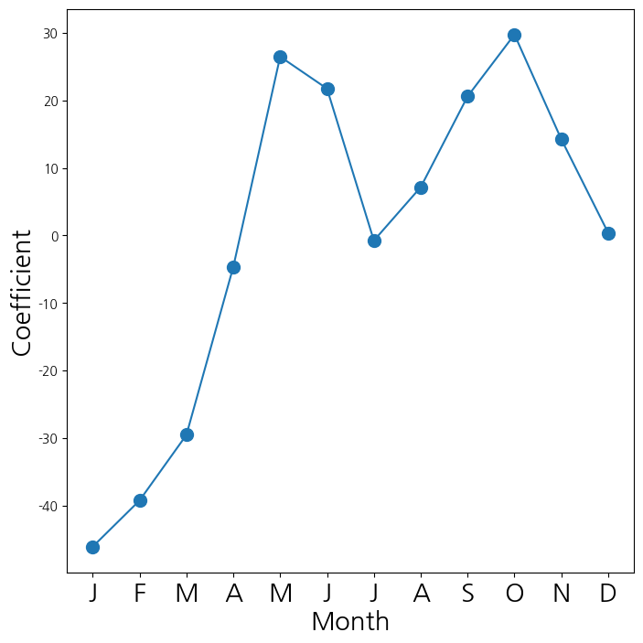
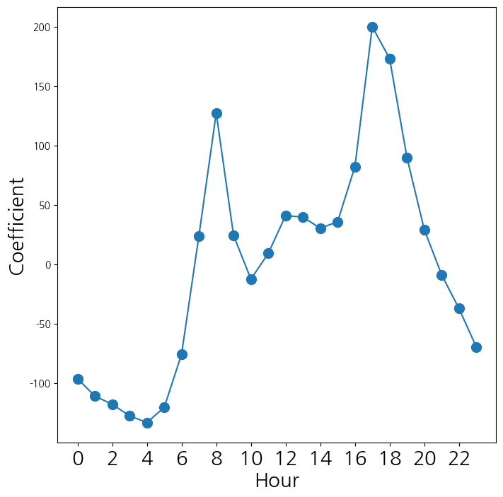
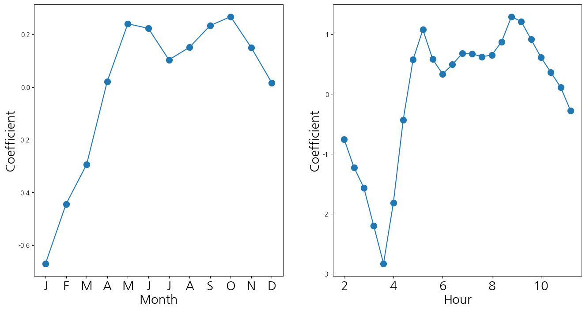
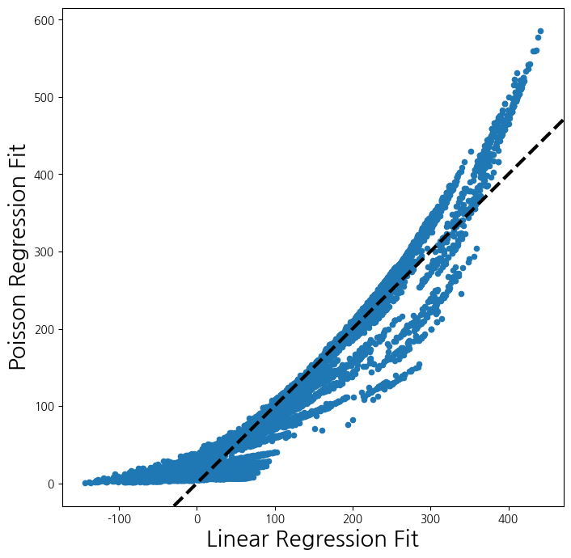

import numpy as np
import pandas as pd
from matplotlib.pyplot import subplots
import statsmodels.api as sm
from ISLP import load_data
from ISLP.models import (ModelSpec as MS,summarize)1. imports
from ISLP import confusion_table
from ISLP.models import contrast
from sklearn.discriminant_analysis import (LinearDiscriminantAnalysis as LDA, QuadraticDiscriminantAnalysis as QDA)
from sklearn.naive_bayes import GaussianNB
from sklearn.neighbors import KNeighborsClassifier
from sklearn.preprocessing import StandardScaler
from sklearn.model_selection import train_test_split
from sklearn.linear_model import LogisticRegression
import matplotlib.pyplot as plt2. Smarket Data 분석
- 불러오기
Smarket = load_data('Smarket')
Smarket
print(Smarket.columns)
import copy
Smar = copy.deepcopy(Smarket)Index(['Year', 'Lag1', 'Lag2', 'Lag3', 'Lag4', 'Lag5', 'Volume', 'Today',
'Direction'],
dtype='object')set(Smar.Direction){'Down', 'Up'}- Direction 을 인코딩(수치화) 후 상관행렬 계산
Smar['Direction'] = Smar['Direction'].map({'Up': 1, 'Down': 0})
print(Smar.corr()) Year Lag1 Lag2 Lag3 Lag4 Lag5 \
Year 1.000000 0.029700 0.030596 0.033195 0.035689 0.029788
Lag1 0.029700 1.000000 -0.026294 -0.010803 -0.002986 -0.005675
Lag2 0.030596 -0.026294 1.000000 -0.025897 -0.010854 -0.003558
Lag3 0.033195 -0.010803 -0.025897 1.000000 -0.024051 -0.018808
Lag4 0.035689 -0.002986 -0.010854 -0.024051 1.000000 -0.027084
Lag5 0.029788 -0.005675 -0.003558 -0.018808 -0.027084 1.000000
Volume 0.539006 0.040910 -0.043383 -0.041824 -0.048414 -0.022002
Today 0.030095 -0.026155 -0.010250 -0.002448 -0.006900 -0.034860
Direction 0.074608 -0.039757 -0.024081 0.006132 0.004215 0.005423
Volume Today Direction
Year 0.539006 0.030095 0.074608
Lag1 0.040910 -0.026155 -0.039757
Lag2 -0.043383 -0.010250 -0.024081
Lag3 -0.041824 -0.002448 0.006132
Lag4 -0.048414 -0.006900 0.004215
Lag5 -0.022002 -0.034860 0.005423
Volume 1.000000 0.014592 0.022951
Today 0.014592 1.000000 0.730563
Direction 0.022951 0.730563 1.000000 - 변수중 하나인 Volume을 시각화
plt.plot(Smar['Volume'])
plt.show()
- 반응변수와 Today, Year 변수를 제외
- MS : 데이터 전처리를 위한 함수
- 문자로 되어있는
Direction변수를 0,1로 변환 - 로지스틱 회귀분석 적용
allvars = Smarket .columns.drop(['Today', 'Direction', 'Year'])
design = MS(allvars)
X = design.fit_transform(Smarket)
y = Smarket.Direction == "Up"
print(y)
glm = sm.GLM(y, X, family=sm.families.Binomial())
results = glm.fit()
print(summarize(results))0 True
1 True
2 False
3 True
4 True
...
1245 True
1246 False
1247 True
1248 False
1249 False
Name: Direction, Length: 1250, dtype: bool
coef std err z P>|z|
intercept -0.1260 0.241 -0.523 0.601
Lag1 -0.0731 0.050 -1.457 0.145
Lag2 -0.0423 0.050 -0.845 0.398
Lag3 0.0111 0.050 0.222 0.824
Lag4 0.0094 0.050 0.187 0.851
Lag5 0.0103 0.050 0.208 0.835
Volume 0.1354 0.158 0.855 0.392- 예측된 확률
label을Down으로 채운 뒤 만약 예측된 확률 > 0.5 이면Up으로 예측(변경)- 훈련 데이터의 예측에 대한 혼동행렬 계산
- 예측정확도 계산
probs = results.predict()
print(probs[:10])
labels = np.array(['Down']*1250)
labels[probs>0.5] = "Up"
print(confusion_table(labels, Smarket.Direction))
np.mean(labels == Smarket.Direction)[0.50708413 0.48146788 0.48113883 0.51522236 0.51078116 0.50695646
0.49265087 0.50922916 0.51761353 0.48883778]
Truth Down Up
Predicted
Down 145 141
Up 457 5070.5216- 훈련 데이터를 2005년 전과 후로 쪼갬
- 훈련 데이터로 학습한 모형으로부터 평가데이터의 예측활률 저장
- \(\to\) 이를 통해 혼동행렬과 예측 정확도 게산
train = (Smarket.Year < 2005)
Smarket_train = Smarket.loc[train]
Smarket_test = Smarket.loc[~train]
Smarket_test.shape(252, 9)X_train, X_test = X.loc[train], X.loc[~train]
y_train, y_test = y.loc[train], y.loc[~train]
glm_train = sm.GLM(y_train, X_train,family=sm.families.Binomial())
results = glm_train.fit()
probs = results.predict(exog=X_test)D = Smarket.Direction
L_train, L_test = D.loc[train], D.loc[~train]
labels = np.array(['Down']*252)
labels[probs>0.5] = 'Up'
print(confusion_table(labels, L_test))
np.mean(labels != L_test)Truth Down Up
Predicted
Down 77 97
Up 34 440.5198412698412699- 전체 변수가 아닌 Lag1과 Lag2만으로 로지스틱 회귀분석 진행
- 혼동행렬을 통해서 예측정확도 파악
- 정확도가 더 낮은 것을 알 수 있음
model = MS(['Lag1', 'Lag2']).fit(Smarket)
X = model.transform(Smarket)
X_train, X_test = X.loc[train], X.loc[~train]
glm_train = sm.GLM(y_train,
X_train ,
family=sm.families.Binomial())
results = glm_train.fit()
probs = results.predict(exog=X_test)
labels = np.array(['Down']*252)
labels[probs>0.5] = 'Up'
print(confusion_table(labels, L_test))
np.mean(labels !=L_test)Truth Down Up
Predicted
Down 35 35
Up 76 1060.44047619047619047- 새로운 데이터가 들어왔을 때, 예측확률 계산
- 모두 0.5보다 작으므로 0 \(\to\)
Down으로 예측
newdata = pd.DataFrame({'Lag1':[1.2, 1.5], 'Lag2':[1.1, -0.8]});
newX = model.transform(newdata)
print(results.predict(newX))0 0.479146
1 0.496094
dtype: float643. LDA & QDA
- 앞의 데이터 이용
LDA로 예측변수들이 주어졌을 때, 0과 1의 확률을 계산- 0과 1의 종류별로 평균벡터와 공유하는 공분산행렬 그리고 각 종에 대한
prior를 보여줌 - 여기서
prior은 1실제 0과 1의 비율
- LDA
- 각 클래스의 공분산이 같다고 가정
- 공분산행렬 하나만 나옴
- 직접 계산한 클래스의 비율과 자동으로 계산된 비율 같은거!
- prior을 지정할 수도 있음
X_train[:5]| intercept | Lag1 | Lag2 | |
|---|---|---|---|
| 0 | 1.0 | 0.381 | -0.192 |
| 1 | 1.0 | 0.959 | 0.381 |
| 2 | 1.0 | 1.032 | 0.959 |
| 3 | 1.0 | -0.623 | 1.032 |
| 4 | 1.0 | 0.614 | -0.623 |
#store_covariance=True : 공분산행렬 저장
lda = LDA(store_covariance=True)
#상수항 intercept 제거
XX_train, XX_test = [M.drop(columns=['intercept']) for M in [X_train, X_test]]
a, c = np.unique(L_train, return_counts=True)
print(f'각각의 라벨의 비율 : \n{c/np.sum(c)}')
lda.fit(XX_train, L_train)
print(f'각 클래스의 평균벡터 : \n Lag1 Lag2\nDown - {lda.means_[0]}\nUp - {lda.means_[1]}')
print(f'공분산 행렬 : \n{lda.covariance_}')
print(f'클래스의 종류 : \n{lda.classes_}')
print(f'각 클래스의 비율 : \n{lda.priors_}')각각의 라벨의 비율 :
[0.49198397 0.50801603]
각 클래스의 평균벡터 :
Lag1 Lag2
Down - [0.04279022 0.03389409]
Up - [-0.03954635 -0.03132544]
공분산 행렬 :
[[ 1.50886781 -0.03340234]
[-0.03340234 1.5095363 ]]
클래스의 종류 :
['Down' 'Up']
각 클래스의 비율 :
[0.49198397 0.50801603]- LDA를 이용한 예측 결과 및 혼동행렬
lda_pred = lda.predict(XX_test)
print(lda_pred[:15])
print(confusion_table(lda_pred, L_test))['Up' 'Up' 'Up' 'Up' 'Up' 'Up' 'Up' 'Up' 'Up' 'Up' 'Up' 'Down' 'Up' 'Up'
'Up']
Truth Down Up
Predicted
Down 35 35
Up 76 106lda_prob = lda.predict_proba(XX_test)
print(lda_prob[:15])[[0.49017925 0.50982075]
[0.4792185 0.5207815 ]
[0.46681848 0.53318152]
[0.47400107 0.52599893]
[0.49278766 0.50721234]
[0.49385615 0.50614385]
[0.49510156 0.50489844]
[0.4872861 0.5127139 ]
[0.49070135 0.50929865]
[0.48440262 0.51559738]
[0.49069628 0.50930372]
[0.51199885 0.48800115]
[0.48951523 0.51048477]
[0.47067612 0.52932388]
[0.47445929 0.52554071]]- QDA를 이용한 결과
- 여기서는 공분산 행렬이 공유되지 않고 0과 1별로 별도의 공분산 행렬 추정됨
qda = QDA(store_covariance=True)
print(qda.fit(XX_train, L_train))
qda.means_, qda.priors_
print(f'0의 공분산 행렬 : \n{qda.covariance_[0]}')
print(f'1의 공분산 행렬 : \n{qda.covariance_[1]}')QuadraticDiscriminantAnalysis(store_covariance=True)
0의 공분산 행렬 :
[[ 1.50662277 -0.03924806]
[-0.03924806 1.53559498]]
1의 공분산 행렬 :
[[ 1.51700576 -0.02787349]
[-0.02787349 1.49026815]]- QDA로 예측한 결과 및 혼합행렬 + 예측 정확도
qda_pred = qda.predict(XX_test)
#print(qda_pred)
print(confusion_table(qda_pred, L_test))
np.mean(qda_pred == L_test)Truth Down Up
Predicted
Down 30 20
Up 81 1210.59920634920634924. Naive Bayes
- Naive 베이즈를 이용한 결과
- 여기에서 theta는 각 종별 평균벡터 var_는 공분산 행렬의 대각값들을 의미(각 종별 분산)
sum(L_train=='Up')/len(L_train)0.5080160320641283NB = GaussianNB()
rs = NB.fit(XX_train, L_train)
print(set(L_train))
print(rs)
print(f'Down,Up의 비율 : \n{NB.class_prior_}')
print(f'각 종별 평균 벡터 : \n{NB.theta_}')
print(f'공분산 행렬의 대각값(각 종별 분산) : \n{NB.var_}'){'Up', 'Down'}
GaussianNB()
Down,Up의 비율 :
[0.49198397 0.50801603]
각 종별 평균 벡터 :
[[ 0.04279022 0.03389409]
[-0.03954635 -0.03132544]]
공분산 행렬의 대각값(각 종별 분산) :
[[1.50355429 1.53246749]
[1.51401364 1.48732877]]- Naive 베이지를 이용한 예측
- 혼합행렬의 결과
Up은 괜찮게 맞추는데Down은 거의 맞추지 못함
nb_labels = NB.predict(XX_test)
print(confusion_table(nb_labels , L_test))Truth Down Up
Predicted
Down 29 20
Up 82 1215. KNN classifier
- 위의 데이터에 적용
knn1 = KNeighborsClassifier(n_neighbors=1)
knn1.fit(XX_train , L_train)
knn1_pred = knn1.predict(XX_test)
print("최근접 이웃 1개")
print(confusion_table(knn1_pred , L_test))
knn3 = KNeighborsClassifier(n_neighbors=3)
knn3_pred = knn3.fit(XX_train , L_train).predict(XX_test)
print("최근접 이웃 3개")
print(confusion_table(knn3_pred , L_test))최근접 이웃 1개
Truth Down Up
Predicted
Down 43 58
Up 68 83
최근접 이웃 3개
Truth Down Up
Predicted
Down 48 55
Up 63 86- 데이터를 불러오기
No가 훨씬 많음
# data loading
# ------------
Caravan = load_data('Caravan')
Purchase = Caravan.Purchase
print(Purchase.value_counts())
feature_df = Caravan.drop(columns=['Purchase'])Purchase
No 5474
Yes 348
Name: count, dtype: int64- 표준화
- with_mean=True : 평균 1
- with_std=True : 표준편차 1
- 표준화를 해서 표준화된 값을
X_std에 저장 후 - 데이터프레임으로 변환
- 결과 : 모두 표준편차가 1에 가깝게 표준화 됨
scaler = StandardScaler(with_mean=True, with_std=True, copy=True)
scaler.fit(feature_df)
X_std = scaler.transform(feature_df)
feature_std = pd.DataFrame(X_std , columns=feature_df.columns)
feature_std.std()MOSTYPE 1.000086
MAANTHUI 1.000086
MGEMOMV 1.000086
MGEMLEEF 1.000086
MOSHOOFD 1.000086
...
AZEILPL 1.000086
APLEZIER 1.000086
AFIETS 1.000086
AINBOED 1.000086
ABYSTAND 1.000086
Length: 85, dtype: float64- KNN을 이용해서 분류를 하고, 테스트 데이터에서 성능을 확인
- No는 잘 맞추는데 Yes는 못맞춤..
(X_train, X_test, y_train, y_test) = train_test_split(feature_std, Purchase, test_size=1000, random_state=0)
knn1 = KNeighborsClassifier(n_neighbors=1)
knn1_pred = knn1.fit(X_train , y_train).predict(X_test)
np.mean(y_test != knn1_pred), np.mean(y_test != "No")
print(confusion_table(knn1_pred , y_test))Truth No Yes
Predicted
No 881 58
Yes 52 9- 이웃수를 증가시켜도 Yes에 대한 정확도가 증가하지 않음
for K in range(1,6):
knn = KNeighborsClassifier(n_neighbors=K)
knn_pred = knn.fit(X_train , y_train).predict(X_test)
C = confusion_table(knn_pred, y_test)
templ = 'K={0:d}: # predicted to rent: {1:>2},' +' # who did rent {2:d}, accuracy {3:.1%}'
pred = C.loc['Yes'].sum()
did_rent = C.loc['Yes','Yes']
print(templ.format(K, pred, did_rent, did_rent / pred))
# rent를 한 사람을 맞춘 것에 대한 정확도임K=1: # predicted to rent: 61, # who did rent 9, accuracy 14.8%
K=2: # predicted to rent: 6, # who did rent 1, accuracy 16.7%
K=3: # predicted to rent: 19, # who did rent 3, accuracy 15.8%
K=4: # predicted to rent: 3, # who did rent 0, accuracy 0.0%
K=5: # predicted to rent: 7, # who did rent 1, accuracy 14.3%- 로지스틱 회귀분석과의 비교
logit = LogisticRegression(C=1e10 , solver='liblinear')
logit.fit(X_train , y_train)
logit_pred = logit.predict_proba(X_test)
print("말안되는 거, 확률이 5보다 클 수 없음 : Yes 0개")
logit_labels = np.where(logit_pred[:,1] > 5, 'Yes', 'No')
print(confusion_table(logit_labels , y_test))
print("확률 0.25 이상이면 Yes로 판단")
logit_labels = np.where(logit_pred[:,1]>0.25, 'Yes', 'No')
print(confusion_table(logit_labels , y_test))말안되는 거, 확률이 5보다 클 수 없음 : Yes 0개
Truth No Yes
Predicted
No 933 67
Yes 0 0
확률 0.25 이상이면 Yes로 판단
Truth No Yes
Predicted
No 913 58
Yes 20 96. 제약 및 다양한 회귀분석
- 데이터 불러오기
# data loading
# ------------
Bike = load_data('Bikeshare')
Bike.shape, Bike.columns((8645, 15),
Index(['season', 'mnth', 'day', 'hr', 'holiday', 'weekday', 'workingday',
'weathersit', 'temp', 'atemp', 'hum', 'windspeed', 'casual',
'registered', 'bikers'],
dtype='object'))- 일반 OLS
- 선형 회귀 모델
- 최소제곱법
- 가변수 인코딩 방식 1)
- 범주형 변수 인코딩필요
- 하나의 범주를 기준으로 나머지 범주 0,1로 표현
- 마지막 범주는 생략
X = MS(['mnth', 'hr', 'workingday', 'temp', 'weathersit']).fit_transform(Bike)
Y = Bike['bikers']
M_lm = sm.OLS(Y, X).fit()
print(summarize(M_lm))
# 가변수의 경우 범주의 수 - 1개의 더미 변수를 구성 coef std err t P>|t|
intercept -68.6317 5.307 -12.932 0.000
mnth[Feb] 6.8452 4.287 1.597 0.110
mnth[March] 16.5514 4.301 3.848 0.000
mnth[April] 41.4249 4.972 8.331 0.000
mnth[May] 72.5571 5.641 12.862 0.000
mnth[June] 67.8187 6.544 10.364 0.000
mnth[July] 45.3245 7.081 6.401 0.000
mnth[Aug] 53.2430 6.640 8.019 0.000
mnth[Sept] 66.6783 5.925 11.254 0.000
mnth[Oct] 75.8343 4.950 15.319 0.000
mnth[Nov] 60.3100 4.610 13.083 0.000
mnth[Dec] 46.4577 4.271 10.878 0.000
hr[1] -14.5793 5.699 -2.558 0.011
hr[2] -21.5791 5.733 -3.764 0.000
hr[3] -31.1408 5.778 -5.389 0.000
hr[4] -36.9075 5.802 -6.361 0.000
hr[5] -24.1355 5.737 -4.207 0.000
hr[6] 20.5997 5.704 3.612 0.000
hr[7] 120.0931 5.693 21.095 0.000
hr[8] 223.6619 5.690 39.310 0.000
hr[9] 120.5819 5.693 21.182 0.000
hr[10] 83.8013 5.705 14.689 0.000
hr[11] 105.4234 5.722 18.424 0.000
hr[12] 137.2837 5.740 23.916 0.000
hr[13] 136.0359 5.760 23.617 0.000
hr[14] 126.6361 5.776 21.923 0.000
hr[15] 132.0865 5.780 22.852 0.000
hr[16] 178.5206 5.772 30.927 0.000
hr[17] 296.2670 5.749 51.537 0.000
hr[18] 269.4409 5.736 46.976 0.000
hr[19] 186.2558 5.714 32.596 0.000
hr[20] 125.5492 5.704 22.012 0.000
hr[21] 87.5537 5.693 15.378 0.000
hr[22] 59.1226 5.689 10.392 0.000
hr[23] 26.8376 5.688 4.719 0.000
workingday 1.2696 1.784 0.711 0.477
temp 157.2094 10.261 15.321 0.000
weathersit[cloudy/misty] -12.8903 1.964 -6.562 0.000
weathersit[heavy rain/snow] -109.7446 76.667 -1.431 0.152
weathersit[light rain/snow] -66.4944 2.965 -22.425 0.000- 가변수 인코딩 방식 2) 합 제약
- 모든 계수들의 합이 0이 되도록
- 마지막 계수는 나머지 계수들의 합의 음의 값
hr_encode = contrast('hr', 'sum') # 합에 대한 제약을 검
mnth_encode = contrast('mnth', 'sum') # 합에 대한 제약을 검
X2 = MS([mnth_encode, hr_encode, 'workingday','temp', 'weathersit']).fit_transform(Bike)
M2_lm = sm.OLS(Y, X2).fit()
S2 = summarize(M2_lm)
print(S2)
# 마지막 범주의 계수는 나머지 계수들의 합에 음수를 취함 coef std err t P>|t|
intercept 73.5974 5.132 14.340 0.000
mnth[Jan] -46.0871 4.085 -11.281 0.000
mnth[Feb] -39.2419 3.539 -11.088 0.000
mnth[March] -29.5357 3.155 -9.361 0.000
mnth[April] -4.6622 2.741 -1.701 0.089
mnth[May] 26.4700 2.851 9.285 0.000
mnth[June] 21.7317 3.465 6.272 0.000
mnth[July] -0.7626 3.908 -0.195 0.845
mnth[Aug] 7.1560 3.535 2.024 0.043
mnth[Sept] 20.5912 3.046 6.761 0.000
mnth[Oct] 29.7472 2.700 11.019 0.000
mnth[Nov] 14.2229 2.860 4.972 0.000
hr[0] -96.1420 3.955 -24.307 0.000
hr[1] -110.7213 3.966 -27.916 0.000
hr[2] -117.7212 4.016 -29.310 0.000
hr[3] -127.2828 4.081 -31.191 0.000
hr[4] -133.0495 4.117 -32.319 0.000
hr[5] -120.2775 4.037 -29.794 0.000
hr[6] -75.5424 3.992 -18.925 0.000
hr[7] 23.9511 3.969 6.035 0.000
hr[8] 127.5199 3.950 32.284 0.000
hr[9] 24.4399 3.936 6.209 0.000
hr[10] -12.3407 3.936 -3.135 0.002
hr[11] 9.2814 3.945 2.353 0.019
hr[12] 41.1417 3.957 10.397 0.000
hr[13] 39.8939 3.975 10.036 0.000
hr[14] 30.4940 3.991 7.641 0.000
hr[15] 35.9445 3.995 8.998 0.000
hr[16] 82.3786 3.988 20.655 0.000
hr[17] 200.1249 3.964 50.488 0.000
hr[18] 173.2989 3.956 43.806 0.000
hr[19] 90.1138 3.940 22.872 0.000
hr[20] 29.4071 3.936 7.471 0.000
hr[21] -8.5883 3.933 -2.184 0.029
hr[22] -37.0194 3.934 -9.409 0.000
workingday 1.2696 1.784 0.711 0.477
temp 157.2094 10.261 15.321 0.000
weathersit[cloudy/misty] -12.8903 1.964 -6.562 0.000
weathersit[heavy rain/snow] -109.7446 76.667 -1.431 0.152
weathersit[light rain/snow] -66.4944 2.965 -22.425 0.000- 두 방법의 모델의 차이
- 예측값 차이의 제곱합 계산
- 거의 0에 근사
- 예측력은 동일다하 할 수 있음
np.sum((M_lm.fittedvalues - M2_lm.fittedvalues)**2)1.6273003592224878e-19- mnth의 [Dec] 계수 계산
- [Dec] 의 계수가 없음
- 나머지 값들의 음수를 취해 마지막 계수 생성
- 합 거의 0에 근사
coef_month = S2[S2.index.str.contains('mnth')]['coef']
print(coef_month)
# 제약조건이 걸린 계수 확인
months = Bike['mnth'].dtype.categories
coef_month = pd.concat([coef_month, pd.Series([-coef_month.sum()], index=['mnth[Dec]'])
])
print(coef_month)
print(sum(coef_month))mnth[Jan] -46.0871
mnth[Feb] -39.2419
mnth[March] -29.5357
mnth[April] -4.6622
mnth[May] 26.4700
mnth[June] 21.7317
mnth[July] -0.7626
mnth[Aug] 7.1560
mnth[Sept] 20.5912
mnth[Oct] 29.7472
mnth[Nov] 14.2229
Name: coef, dtype: float64
mnth[Jan] -46.0871
mnth[Feb] -39.2419
mnth[March] -29.5357
mnth[April] -4.6622
mnth[May] 26.4700
mnth[June] 21.7317
mnth[July] -0.7626
mnth[Aug] 7.1560
mnth[Sept] 20.5912
mnth[Oct] 29.7472
mnth[Nov] 14.2229
mnth[Dec] 0.3705
dtype: float64
1.4210854715202004e-14- mnth(월) 에 대응되는 계수들을 선도표로 연결해서 시각화
fig_month , ax_month = subplots(figsize=(8,8))
x_month = np.arange(coef_month.shape[0])
ax_month.plot(x_month , coef_month , marker='o', ms=10)
ax_month.set_xticks(x_month)
ax_month.set_xticklabels([l[5] for l in coef_month.index], fontsize
=20)
ax_month.set_xlabel('Month', fontsize=20)
ax_month.set_ylabel('Coefficient', fontsize=20);
- 시간에 대응되는 계수들을 선도표로 연결해서 시각화
coef_hr = S2[S2.index.str.contains('hr')]['coef']
coef_hr = coef_hr.reindex(['hr[{0}]'.format(h) for h in range(23)])
coef_hr = pd.concat([coef_hr, pd.Series([-coef_hr.sum()], index=['hr[23]'])
])
fig_hr , ax_hr = subplots(figsize=(8,8))
x_hr = np.arange(coef_hr.shape[0])
ax_hr.plot(x_hr , coef_hr , marker='o', ms=10)
ax_hr.set_xticks(x_hr[::2])
ax_hr.set_xticklabels(range(24)[::2], fontsize =20)
ax_hr.set_xlabel('Hour', fontsize=20)
ax_hr.set_ylabel('Coefficient', fontsize=20);
- 포아송 분포를 가정하고 평균을 추정
- 월별, 시간에 딸ㄴ 계수의 값을 선도표화
M_pois = sm.GLM(Y, X2, family=sm.families.Poisson()).fit()
S_pois = summarize(M_pois)
coef_month = S_pois[S_pois.index.str.contains('mnth')]['coef']
coef_month = pd.concat([coef_month ,
pd.Series([-coef_month.sum()],
index=['mnth[Dec]'])])
coef_hr = S_pois[S_pois.index.str.contains('hr')]['coef']
coef_hr = pd.concat([coef_hr ,
pd.Series([-coef_hr.sum()],
index=['hr[23]'])])
fig_pois , (ax_month , ax_hr) = subplots(1, 2, figsize=(16,8))
ax_month.plot(x_month , coef_month , marker='o', ms=10)
ax_month.set_xticks(x_month)
ax_month.set_xticklabels([l[5] for l in coef_month.index], fontsize
=20)
ax_month.set_xlabel('Month', fontsize=20)
ax_month.set_ylabel('Coefficient', fontsize=20)
ax_hr.plot(x_hr , coef_hr , marker='o', ms=10)
ax_hr.set_xticklabels(range(24)[::2], fontsize =20)
ax_hr.set_xlabel('Hour', fontsize=20)
ax_hr.set_ylabel('Coefficient', fontsize=20);/tmp/ipykernel_154232/2887756137.py:20: UserWarning: FixedFormatter should only be used together with FixedLocator
ax_hr.set_xticklabels(range(24)[::2], fontsize =20)
- 일반 선형회귀직선과 포아송 분포를 가정한 평균직선을 비교
fig , ax = subplots(figsize=(8, 8))
ax.scatter(M2_lm.fittedvalues ,
M_pois.fittedvalues ,
s=20)
ax.set_xlabel('Linear Regression Fit', fontsize=20)
ax.set_ylabel('Poisson Regression Fit', fontsize=20)
ax.axline([0,0], c='black', linewidth=3,
linestyle='--', slope=1);